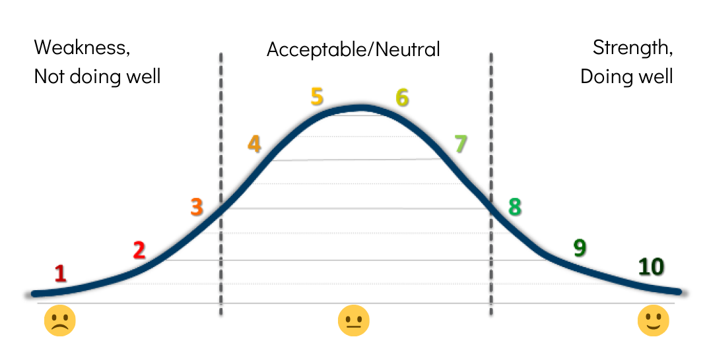
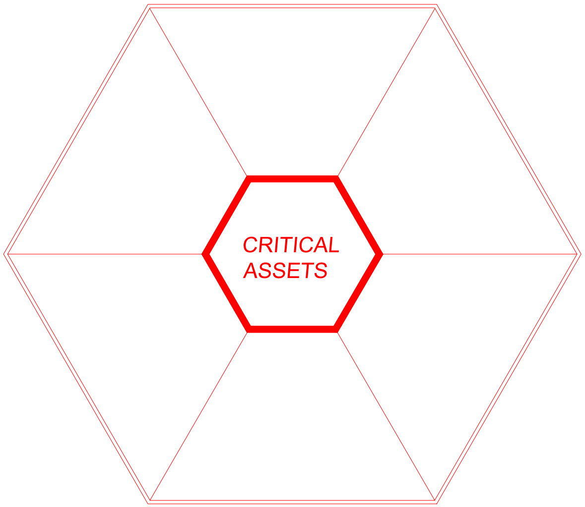
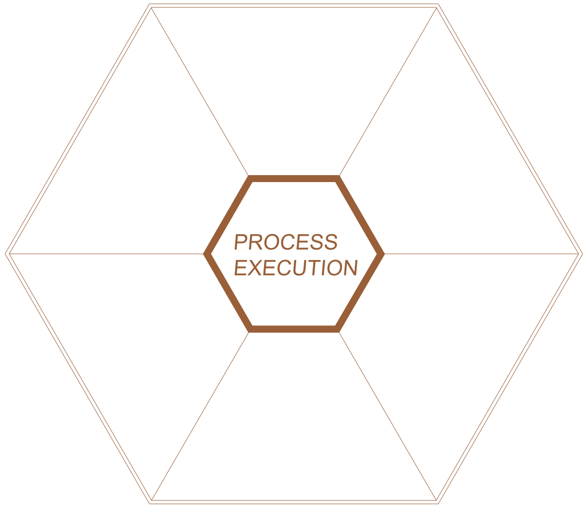

Discovery Process
Program Assessment Tool
Throughout this assessment you will be asked to rate the current state of your roof management program on a scale from 1 to 10. Please keep the following bell curve in mind as you rate your organization:

There might be some areas where you're not sure how your organization compares to other companies. That is where Benchmark's expertise comes into play. We will also assess your organization and rate your roof management program compared to what we've seen in the industry for more than 25 years.
Basic Information
Name:
Email:
Company ID Code:
Critical Assets

Critical roof assets are ones that:
- Are sensitive to water
- Pose a safety concern
- Protect a profit center
- House essential business operations
- Cannot be disrupted
Please indicate where the current state of your roof management plan falls on the scale from 1-10 for the following questions.
1. There is a management tool (i.e., a list or inventory) for segregation, review, analysis, and prioritization of critical roof assets.
Comments:
2. The above management tool is communicated throughout the organization and consistently utilized.
Comments:
3. A condition assessment of critical roof assets has been completed within the past (3) years.
Comments:
4. A multi-year investment plan for repair, maintenance, and replacement of critical assets exists.
Comments:
5. There is an increased schedule for tasks such as inspection, maintenance, repair, and leak response for critical roof assets.
Comments:
6. There are increased standards for design, material selection, and construction quality on critical roof assets.
Comments:
Return on Capital
An integrated program results in lowest total cost of ownership (TCO). This involves maximizing the service life of existing assets, calibrating the design and effective procurement of new assets, and maximizing the care of critical assets.
Working together, roof reliability maximizes facility performance.
Please indicate where the current state of your roof management plan falls on the scale from 1-10 for the following questions.

1. Roof replacement, repair, and maintenance costs are gathered and analyzed annually.
Comments:
2. Roof replacement costs are competitive.
Comments:
3. There is a roof repair and maintenance program strategically utilized to both maximize service life and lowest life cycle cost.
Comments:
4. There have been unplanned and/or costly facility or production disruptions due to roof issues within the previous 12 months (i.e. structural collapse, product loss, etc.)
(low occurrence = 1-3; moderate occurrence = 4-7; high occurrence = 8-10)
Comments:
5. Roof funding level is committed and aligned with lowest TCO (i.e, repair, preventive maintenance, and replacement).
Comments:
6. Roof design is intentionally matched up with specific project complexity and critical vs. non-critical roof asset goals.
Comments:
Strategic Sourcing

Strategic sourcing is:
- Organized
- Proactive
- Skillful
- Consistent
- Resourceful
Please indicate where the current state of your roof management plan falls on the scale from 1-10 for the following questions.
1. There is a process to approve and annually review contractors, consultants, and roofing products.
Comments:
2. MSA contracts are in place for top vendors.
Comments:
3. An adequate vendor pool with sufficient geographic/plant coverage exists.
Comments:
4. Roof purchases (i.e., professional services, contractor services, etc.) are bundled and centralized.
Comments:
5. Roofing purchases are timed to maximize seasonal leverage.
Comments:
6. Pricing models are in place and being analyzed annually.
Comments:
Human Behavior
Human behavior encompasses:
- Clear roles and responsibilities
- The players on your team
- Effective communication
- Accountability at all levels
- Having a vision and goal-driver
- Alignment with one another and Market-Based Management (MBM) values
In this section, your key players might be your:
- Sourcing analysts, sourcing department, and teams that handle your key contracts.
- Plant personnel, like your plant managers, director of operations, EHS team, and other managers/gatekeepers.
- Risk management
- ETMS Subject Matter Experts
- Corporate Vice President
Please indicate where the current state of your roof management plan falls on the scale from 1-10 for the following questions.
1. There is a clear Roofing Accountability Chart (RAC) naming all persons responsible for the roofing category at appropriate levels (i.e., plant, division, corporate).
Comments:
2. Roles, Responsibilities, and Expectations (RREs) are clearly stated for all positions on the RAC.
Comments:
3. There is an established pattern of communication to share best practices, ideation, problem solving, project/vendor reviews, etc. (i.e., monthly Zoom meeting, annual knowledge share conferences, etc.).
Comments:
4. There is an ongoing program for employee development and lifelong learners (i.e., technical training, best practices).
Comments:
5. There is a dedicated Subject Matter Expert (SME) for the roofing category.
Comments:
6. There is a clear vision and goals for established timeframes (i.e., 1 year, 3 year, and 5 year; Quarterly "tasks," and accountability models).
Comments:
Process Execution

Process execution includes well-documented processes, including:
- Development and full execution of a plan
- Adhering to the design/bid process
- Enlisting construction phase services
- Completing annual maintenance
Please indicate where the current state of your roof management plan falls on the scale from 1-10 for the following questions.
1. There is a written roof management process in place (corporate, division, and facility).
Comments:
2. The defined roof management process is communicated, generally followed, and refreshed annually.
Comments:
3. A roof inventory and condition assessment of all roof assets has been completed within the last 6 years.
Comments:
4. A roof inventory and condition assessment of most critical roof assets has been completed within the last 3 years.
Comments:
5. Roof investments are prioritized using data management and key variables.
Comments:
6. Preventive maintenance and repairs are implemented annually, and are aligned with life cycle modeling TCO objectives.
Comments:
7. Corporate roof design standards exist.
Comments:
8. There is a written preconstruction process that is followed and precedes all roof construction projects.
Comments:
9. There are written guidelines for construction phase project management practices.
Comments:
10. Job closeout processes with Lessons Learned/Vendor Feedback occurs after all roofing projects.
Comments:
11. There is a digital roof records management system.
Comments:
12. There is an established system to handle roof leaks (i.e., report, respond, record program, etc.) and it is being practiced.
Comments:
Risk Management & Compliance
The following must be considered:
- Safety as the company's guiding principle
- Market-Based Management (MBM)
- Improving safety metrics trend, year over year
- Industry-leading performance
- ARIBA score
- Large Project Work Process
Please indicate where the current state of your roof management plan falls on the scale from 1-10 for the following questions.
1. There is a written corporate risk management and compliance plan.
Comments:
2. There are vendor selection criteria including safety performance (i.e., ISNetworld grade, etc.).
Comments:
3. Risks associated with roofing are identified, evaluated, and prioritized.
Comments:
4. Prioritized risks are followed up with economical application of resources to minimize probability of occurrence.
Comments:
5. All roof replacement proposals/specifications are reviewed/approved by Risk Management and in compliance with laws and regulations.
Comments:
6. The facility EHS person is actively involved in roof construction projects.
Comments: